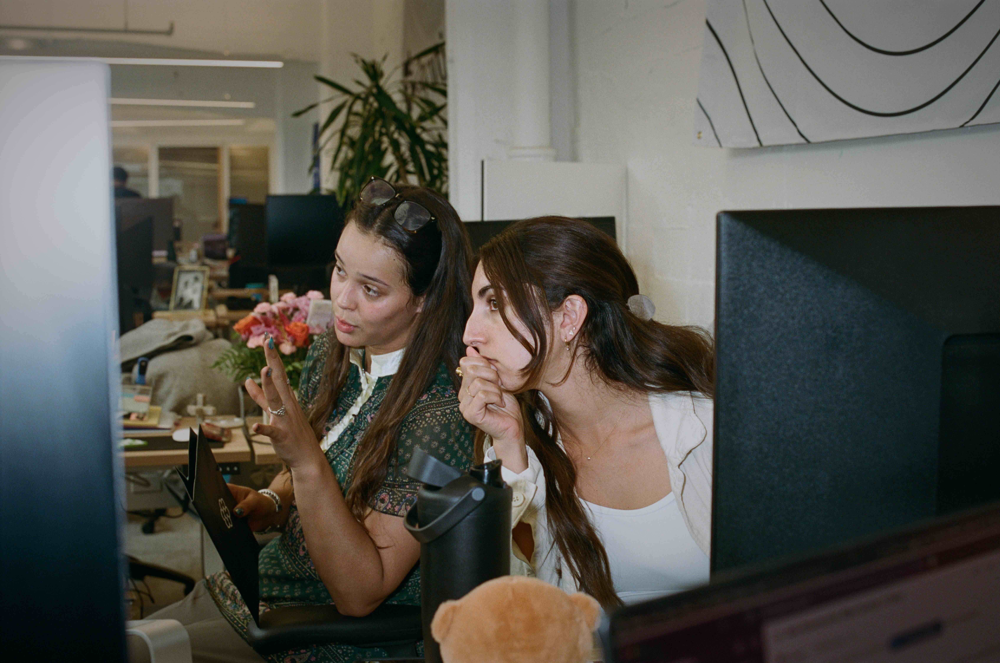
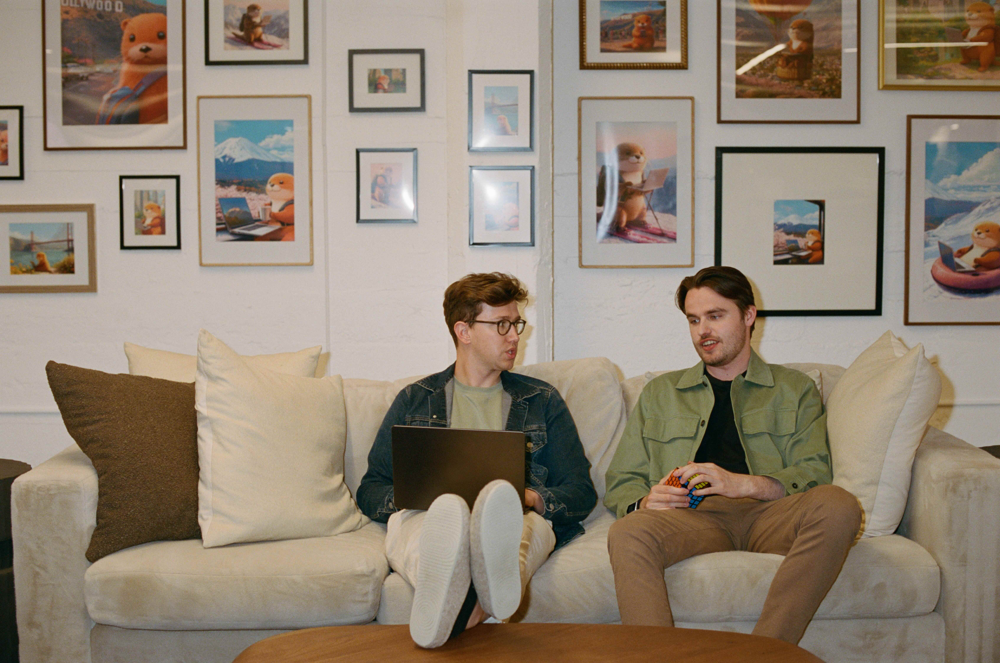

Cognition은 실리콘밸리 기준으로 봐도 젊은 회사다. 이 회사는 자율 AI 소프트웨어 엔지니어인 Devin을 2024년 초에 만들었는데, 그때만 해도 에이전트의 기본 작동 방식조차 간신히 버티는 수준이었다.
Devin은 엔지니어들이 끝내 손대지 못하고 넘어가는 일들을 떠맡는다. 코드베이스 마이그레이션, 쌓여만 가는 버그 백로그, 계속 미뤄지는 기능 같은 것들이다. 고성장 스타트업부터 포춘 500대 기업까지 고객층이 걸쳐 있으니 기준은 높다. Devin이 짠 코드는 믿을 수 있고 곧바로 프로덕션에 올릴 수 있어야 한다. 조용히 끼어든 작은 버그 하나가 나중에 실제 문제를 일으킬 수 있기 때문이다.
알베르티(Alberti)의 팀은 Devin을 떠받치는 모델을 학습시키고 시험하며, 초창기부터 거의 모든 Claude 세대를 돌려 봤다. 그는 첫 번째 진짜 도약을 2024년 말의 Claude 3.6 Sonnet에서 찾는다. 그것은 도구를 안정적으로 이어 붙이고 여러 단계짜리 작업을 놓치지 않고 붙들 수 있었던 첫 모델이었다. 팀이 그것을 Devin에 물리자 사내 사용량이 세 배로 뛰었다.
바로 그 이력이 그를 웬만해선 감탄하지 않는 사람으로 만든다. Cognition은 어떤 모델이 벤치마크를 만점으로 통과해 놓고도, 막상 엔지니어들이 써 보려는 순간 무너지는 광경을 여러 번 봐 왔다. "이런 식으로 여러 번 데인 적이 있습니다." 알베르티는 말한다. 그래서 팀은 어떤 점수보다 자기네 엔지니어를 더 믿는다. 안목이 가장 뛰어난 개발자들이 새 모델마다 실제 하루치 업무를 시켜 보고, 판단 기준은 그 코드가 자기라면 실제로 남겨 둘 만한 것인가이다.
알베르티의 표현대로라면, "우리는 어떤 평가(eval)도 믿지 않는다."
그 모든 진전에도 천장 하나가 남아 있었다. 에이전트가 실을 놓치기 전까지 얼마나 오래 돌 수 있느냐는 것이었다.
"Fable 이전에는, 위임한 에이전트가 몇 분, 잘해야 한 시간 정도 과업에 머물러 있을 수 있었습니다." 알베르티는 말한다. 그 뒤로는 세션이 표류했다. 이전 모델에 한꺼번에 저울질할 아이디어 다섯 개를 주면, 그것은 흐름을 놓치고 헷갈려 했다. 한 데이터베이스 마이그레이션에서는, 이전 Opus 모델이 기술적으로는 일을 끝내긴 했지만 그 과정에서 미묘한 버그를 줄줄이 심어 놓았다.
장애 분류(incident triage)에서도 똑같은 모양이 나타났다. 이전 모델들은 정작 필요한 한 줄을 파고들기보다 로그의 표면에 머무는 경향이 있었고, 무슨 일이 있어도 답을 내놓도록 학습돼 있었다. 그래서 "처음 발견한 그럴듯한 것을 자신 있게 단정하고는 거기서 멈춰" 버렸다. 엔지니어들은 이 모델들을 흘려듣는 법을 익혔다.

Cognition은 모델을 Frontier Code로 채점한다. 기존 벤치마크들이 테스트는 통과하지만 실제 코드베이스에서는 살아남지 못할 코드에 자꾸 점수를 줬기 때문에, 회사가 직접 만든 벤치마크다. 알베르티는 이를 "슬롭(slop, 대충 뽑아낸 저질 결과물) 방지" 기준이라고 부른다. 그 가장 어려운 하위 집합에서, 이전 Opus 모델은 약 10%를 기록했다. Claude Fable 5는 약 30%를 기록했다.
팀의 첫 반응은 의심이었다. "버그가 있는 거 아냐? 이럴 리가 없는데." 보통 벤치마크 점수가 뛰면, 그 모델이 실전에서 실제로 더 나은지를 두고 엔지니어들이 몇 주씩 갑론을박한다. 이번에는 직접 써 보는 도그푸딩(dogfooding)이 숫자와 일치했다. "솔직히 좀 충격이었죠." 알베르티는 말한다.
"가장 크게 눈에 띈 건 시야(horizon), 즉 얼마나 오래 스스로 알아서 해낼 수 있느냐였습니다." 그는 말한다. "이제 막 자려고 하는데 '자, 이거 계속 붙들고 있다가 내가 깰 때까지 멈추지 마' 하고 맡긴 작업들이 있었어요. 그리고 깨어 보면, 여덟 시간을 내리 붙들고 실제로 진짜 진전을 내고 있는 거예요. 예전엔 본 적 없는 일이었죠."
그 시야가 유지된 건 Claude Fable 5가 어수선한 맥락 속에서도 정신을 또렷하게 유지했기 때문이다. 그것은 Cognition의 사내 디버깅 도구를 제대로 쓴 첫 모델이었다. 브라우저에서 로그를 한 페이지씩 넘겨 보며, 잡음 속에서도 결론을 이끌어 냈다. 이전 모델들을 걸려 넘어지게 했던 마이그레이션에서는, 자신이 지킬 불변 조건(invariant)을 먼저 명시하고 나서 그에 맞춰 실행했다. 장애 분류에서는 근본 원인(root cause)을 짚어 내고 자기가 모르는 부분이 무엇인지를 밝혔는데, 알베르티는 바로 그것이 신뢰를 실제로 다시 쌓는 지점이라고 말한다.
그는 이 도약을, 대략 일 년에 한 번쯤 오는 진짜 계단식 변화(step change)라는 작은 부류에 넣는다.

Cognition의 창업 승부수는 에이전트가 클라우드에서 몇 시간씩 돌아야 한다는 것이었다. 회사의 첫해 동안에는 모델들이 아직 그 수준에 이르지 못했다.
알베르티는 Claude Fable 5가 그 승부수의 완전한 형태를 실현 가능하게 만들었으며, 그중 일부는 이미 제품에 들어가 있다고 말한다. Devin은 Slack 채널을 지켜보다가 태그당하지 않아도 이슈에 뛰어들 수 있고, 프로덕션을 모니터링하다가 스파이크(spike, 갑작스러운 급증)를 스스로 분류해 낼 수도 있다. 그런 일 하나를 제대로 해낼 때면, 그는 "팀에 있는 진짜 엔지니어 같다"고 느낀다고 말한다.
그는 이것이 엔지니어링 팀의 기본값이 되리라 본다. 일이 년 안에, 에이전트 세션의 90%는 문제를 먼저 찾아내고, 코드베이스를 훑고, 고칠 방법을 담아 당신에게 메시지를 보내는 능동적(proactive) 세션이 될 거라고 그는 말한다.
"회사에서 늘 만들고 싶었던 이런 것들 상당수가 이제 가능해졌습니다." 알베르티는 말한다.
지금 Claude Fable 5를 시작해 보세요.